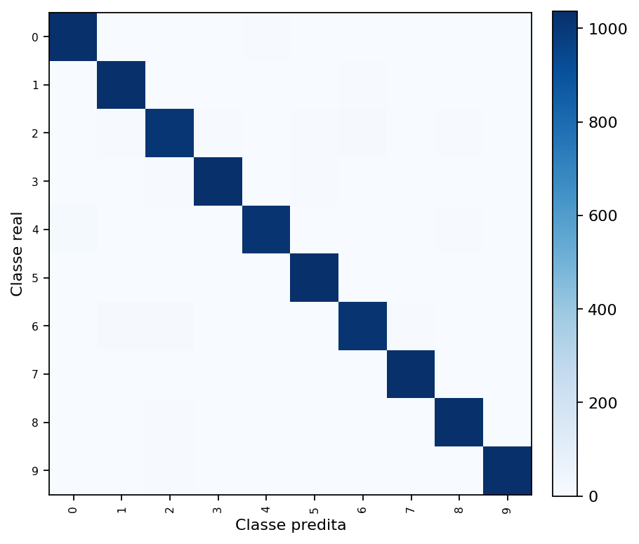
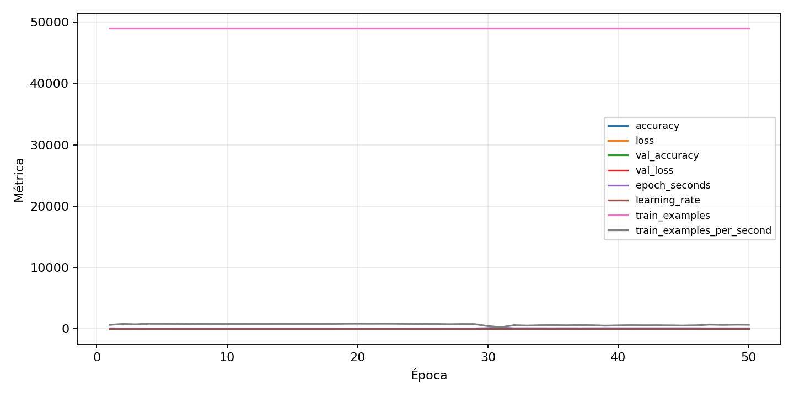

| n_samples | 10500 |
|---|---|
| loss | 0.11563931405544281 |
| accuracy | 0.9783809523809524 |
| balanced_accuracy | 0.9783809523809524 |
| macro_f1 | 0.9783700677519228 |


| Índice | Classe | Suporte | Precisão | Recall | F1 |
|---|---|---|---|---|---|
| 0 | 0 | 1050 | 0.9763257575757576 | 0.981904761904762 | 0.9791073124406459 |
| 1 | 1 | 1050 | 0.9744801512287334 | 0.981904761904762 | 0.9781783681214421 |
| 2 | 2 | 1050 | 0.9655502392344497 | 0.960952380952381 | 0.9632458233890215 |
| 3 | 3 | 1050 | 0.9745523091423186 | 0.9847619047619047 | 0.9796305068687826 |
| 4 | 4 | 1050 | 0.9845261121856866 | 0.9695238095238096 | 0.9769673704414586 |
| 5 | 5 | 1050 | 0.9773156899810964 | 0.9847619047619047 | 0.9810246679316887 |
| 6 | 6 | 1050 | 0.9787849566055931 | 0.9666666666666667 | 0.9726880689985624 |
| 7 | 7 | 1050 | 0.9819734345351043 | 0.9857142857142858 | 0.9838403041825095 |
| 8 | 8 | 1050 | 0.9846889952153111 | 0.98 | 0.9823389021479714 |
| 9 | 9 | 1050 | 0.9857414448669202 | 0.9876190476190476 | 0.9866793529971456 |
{"adapter":"kmnist","balance_mode":"all_raw","class_names":["0","1","2","3","4","5","6","7","8","9"],"dataset":"kmnist","dataset_options":{},"dataset_root":"/home/msduda/datasets-tcc/kmnist","native_channels":1,"normalization":"unit_interval","num_classes":10,"protocol":{"checkpoint_monitor":"val_macro_f1","dtype_policy":"mixed_float16","early_stopping":{"patience":50,"restore_best_weights":true},"evaluation_augmentation":false,"input_channels":"native","optimizer":"Adam","pretrained_weights":false,"reduce_lr_on_plateau":{"factor":0.3,"min_lr":1e-07,"patience":50},"resize":"proportional_padding","test_time_augmentation":false,"training_from_scratch":true},"seed":42,"source_fingerprint":"8928d478d8d23938a73b4f4a92c407bf3d74beff1e0e67e3644d6ecdc30cf828","source_manifest":{"class_names":["0","1","2","3","4","5","6","7","8","9"],"joined_samples":70000,"metadata":{"layout":"kmnist-component-npz"},"name":"kmnist","native_channels":1,"source_path":"/home/msduda/datasets-tcc/kmnist","splits":{"test":10000,"train":60000},"target_size":64},"target_size":64,"test_fraction":0.15,"train_fraction":0.7,"training":{"augmentation":{"brightness_delta":0.0,"contrast_lower":1.0,"contrast_upper":1.0,"cutout_max_frac":0.0,"cutout_prob":0.0,"flip_lr":false,"noise_std":0.0,"translate_frac":0.0,"zoom_max":1.0,"zoom_min":1.0},"batch_size":272,"default_image_size":64,"dtype_policy":"mixed_float16","early_stopping_patience":50,"extra_fraction":0.0,"image_size_overrides":{"gtsrb":128},"keras_verbose":1,"learning_rate":0.0003,"max_epochs":50,"preprocess_cache_max_mib":0,"reduce_lr_factor":0.3,"reduce_lr_min_lr":1e-07,"reduce_lr_patience":50,"shuffle_buffer_max_mib":0},"validation_fraction":0.15}
{"epochs_completed":50,"epochs_recorded":50,"evaluation_seconds":24.954079601000558,"fit_seconds_current_attempt":4491.641853192001,"max_epoch_seconds":188.12567920699985,"max_epochs":50,"mean_epoch_seconds":73.65805766001999,"mean_train_examples_per_second":696.8036097502218,"median_train_examples_per_second":763.9460296579489,"min_epoch_seconds":58.34608457899958,"selected_checkpoint":"/mnt/e/tcc-benchmark/outputs/kmnist-alldata-noaug-batch-sweep-2026-08-06/batch-272/kmnist/runs/kmnist__unit_interval__all_raw__seed-42/checkpoints/best.keras","total_seconds":3682.9028830009993,"training_seconds":3682.9028830009993,"wall_seconds_current_attempt":4521.348755491999}
{"elapsed_seconds":4521.420212675001,"event_counts":{"data_preparation_end":1,"data_preparation_start":1,"epoch_end":50,"evaluation_end":1,"evaluation_start":1,"fit_end":1,"fit_start":1,"periodic":823,"run_completed":1,"train_start":1},"generated_at":"2026-08-07T20:37:38.520+00:00","gpu_backend":"pynvml","interval_seconds":5.0,"metrics":{"cpu_percent":{"count":881,"max":33.3,"mean":12.4577752553916,"min":0.0,"p50":12.8,"p95":16.1},"disk_data_free_bytes":{"count":881,"max":998271283200.0,"mean":998271219616.6902,"min":998271209472.0,"p50":998271217664.0,"p95":998271221760.0},"disk_data_percent":{"count":881,"max":2.7,"mean":2.7,"min":2.7,"p50":2.7,"p95":2.7},"disk_data_total_bytes":{"count":881,"max":1081101176832.0,"mean":1081101176832.0,"min":1081101176832.0,"p50":1081101176832.0,"p95":1081101176832.0},"disk_data_used_bytes":{"count":881,"max":27837612032.0,"mean":27837601887.309875,"min":27837538304.0,"p50":27837603840.0,"p95":27837603840.0},"disk_output_free_bytes":{"count":881,"max":207225266176.0,"mean":207212373241.89786,"min":207211245568.0,"p50":207212175360.0,"p95":207212490752.0},"disk_output_percent":{"count":881,"max":79.3,"mean":79.3,"min":79.3,"p50":79.3,"p95":79.3},"disk_output_total_bytes":{"count":881,"max":1000186310656.0,"mean":1000186310656.0,"min":1000186310656.0,"p50":1000186310656.0,"p95":1000186310656.0},"disk_output_used_bytes":{"count":881,"max":792975065088.0,"mean":792973937414.1022,"min":792961044480.0,"p50":792974135296.0,"p95":792974970880.0},"elapsed_seconds":{"count":881,"max":4521.342046,"mean":2214.8189988081726,"min":0.034481,"p50":2083.666118,"p95":4322.20908},"gpu_count":{"count":881,"max":1.0,"mean":1.0,"min":1.0,"p50":1.0,"p95":1.0},"gpu_memory_percent":{"count":881,"max":57.21325874328613,"mean":54.096355719680005,"min":45.87907791137695,"p50":54.51240539550781,"p95":55.43808937072754},"gpu_memory_total_bytes":{"count":881,"max":8589934592.0,"mean":8589934592.0,"min":8589934592.0,"p50":8589934592.0,"p95":8589934592.0},"gpu_memory_used_bytes":{"count":881,"max":4914581504.0,"mean":4646841572.976164,"min":3940982784.0,"p50":4682579968.0,"p95":4762095616.0},"gpu_temperature_c":{"count":881,"max":54.0,"mean":45.91373439273553,"min":40.0,"p50":45.0,"p95":52.0},"gpu_utilization_percent":{"count":881,"max":82.0,"mean":33.65266742338252,"min":4.0,"p50":35.0,"p95":52.0},"process_cpu_percent":{"count":881,"max":477.0,"mean":168.53984108967083,"min":0.0,"p50":168.1,"p95":217.3},"process_read_bytes":{"count":881,"max":10686464.0,"mean":10669791.745743474,"min":7933952.0,"p50":10686464.0,"p95":10686464.0},"process_rss_bytes":{"count":881,"max":3893415936.0,"mean":3699459861.212259,"min":1029861376.0,"p50":3786862592.0,"p95":3855732736.0},"process_vms_bytes":{"count":881,"max":48635035648.0,"mean":48306392548.685585,"min":39580327936.0,"p50":48419713024.0,"p95":48502915072.0},"process_write_bytes":{"count":881,"max":1146880.0,"mean":1135675.278093076,"min":4096.0,"p50":1146880.0,"p95":1146880.0},"ram_available_bytes":{"count":881,"max":15538196480.0,"mean":13037900440.844496,"min":12850737152.0,"p50":12950335488.0,"p95":13545656320.0},"ram_percent":{"count":881,"max":22.7,"mean":21.548240635641317,"min":6.5,"p50":22.1,"p95":22.5},"ram_total_bytes":{"count":881,"max":16619085824.0,"mean":16619085824.0,"min":16619085824.0,"p50":16619085824.0,"p95":16619085824.0},"ram_used_bytes":{"count":881,"max":3768348672.0,"mean":3581185383.155505,"min":1080889344.0,"p50":3668750336.0,"p95":3733946368.0}},"sample_count":881,"schema_version":1}